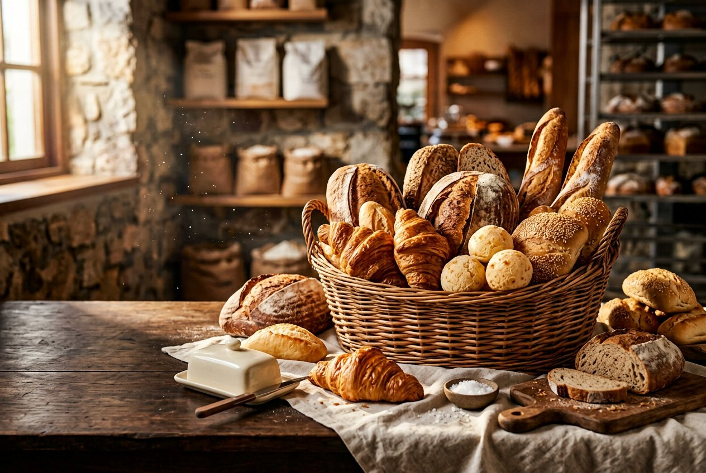

O cheirinho que abraça
Tem gosto de
casa. Tem carinho
de Claudia.
Pães douradinhos, receitas feitas à mão e aquele sabor de aconchego que transforma qualquer momento.
Receitas de família
feitas todos os dias
feitas todos os dias
COM AMORfeito
à mãoDESDE SEMPRE
ROLE PARA SENTIR O CHEIRINHO
à mãoDESDE SEMPRE
01 Ingredientes escolhidos
✦02 Fornadas fresquinhas
✦03 Afeto em cada receita

DA NOSSA COZINHA
para a sua mesa
para a sua mesa
UM PEDAÇO DE CASA
Não é só pão.
É memória boa.
Tem coisa que alimenta mais que a fome. O cheirinho de pão saindo do forno, a mesa reunida, a receita passada com carinho. É esse sentimento que a Claudia coloca em cada fornada.
Feito à mão, com ingredientes escolhidos e o cuidado de quem acredita que comida boa também é uma forma de amar.
Encontre seu novo favorito ↗com carinho, Claudia